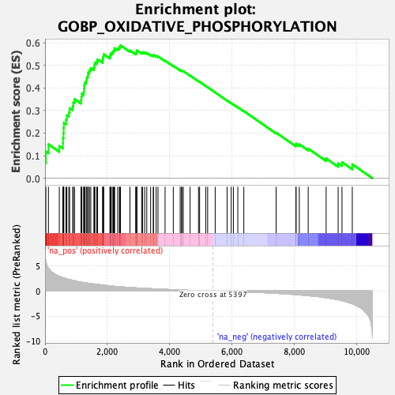
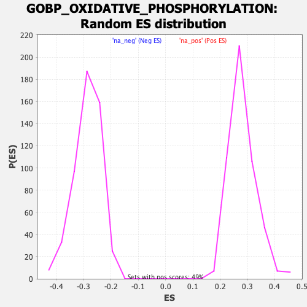

| Dataset | qlf.KOd4vsWTd4_gsea_score |
| Phenotype | NoPhenotypeAvailable |
| Upregulated in class | na_pos |
| GeneSet | GOBP_OXIDATIVE_PHOSPHORYLATION |
| Enrichment Score (ES) | 0.5889401 |
| Normalized Enrichment Score (NES) | 2.0907884 |
| Nominal p-value | 0.0 |
| FDR q-value | 9.0896996E-5 |
| FWER p-Value | 0.008 |

| SYMBOL | RANK IN GENE LIST | RANK METRIC SCORE | RUNNING ES | CORE ENRICHMENT | |
|---|---|---|---|---|---|
| 1 | CHCHD10 | 1 | 7.860 | 0.0687 | Yes |
| 2 | BID | 27 | 5.961 | 0.1185 | Yes |
| 3 | NDUFAB1 | 109 | 4.535 | 0.1504 | Yes |
| 4 | SHMT2 | 458 | 2.928 | 0.1426 | Yes |
| 5 | CYC1 | 575 | 2.676 | 0.1549 | Yes |
| 6 | SDHD | 577 | 2.671 | 0.1782 | Yes |
| 7 | NDUFB6 | 592 | 2.632 | 0.1999 | Yes |
| 8 | ATP7A | 598 | 2.623 | 0.2224 | Yes |
| 9 | NDUFA12 | 603 | 2.616 | 0.2449 | Yes |
| 10 | PPIF | 673 | 2.466 | 0.2598 | Yes |
| 11 | NDUFS7 | 700 | 2.423 | 0.2786 | Yes |
| 12 | NDUFA9 | 764 | 2.302 | 0.2927 | Yes |
| 13 | CYCS | 789 | 2.271 | 0.3102 | Yes |
| 14 | STOML2 | 889 | 2.135 | 0.3194 | Yes |
| 15 | UQCC2 | 908 | 2.118 | 0.3362 | Yes |
| 16 | UQCRB | 948 | 2.066 | 0.3506 | Yes |
| 17 | UQCRFS1 | 1154 | 1.778 | 0.3465 | Yes |
| 18 | DLD | 1166 | 1.762 | 0.3608 | Yes |
| 19 | MYC | 1183 | 1.748 | 0.3746 | Yes |
| 20 | CHCHD2 | 1242 | 1.684 | 0.3838 | Yes |
| 21 | NDUFA5 | 1250 | 1.677 | 0.3978 | Yes |
| 22 | NDUFA10 | 1258 | 1.669 | 0.4117 | Yes |
| 23 | NDUFB4 | 1277 | 1.653 | 0.4244 | Yes |
| 24 | NDUFB10 | 1324 | 1.603 | 0.4340 | Yes |
| 25 | NDUFB8 | 1340 | 1.590 | 0.4465 | Yes |
| 26 | TEFM | 1373 | 1.563 | 0.4571 | Yes |
| 27 | NDUFS3 | 1387 | 1.555 | 0.4695 | Yes |
| 28 | COX7A2 | 1428 | 1.515 | 0.4789 | Yes |
| 29 | DNAJC15 | 1469 | 1.481 | 0.4880 | Yes |
| 30 | SLC25A51 | 1569 | 1.398 | 0.4908 | Yes |
| 31 | UQCRC1 | 1585 | 1.384 | 0.5014 | Yes |
| 32 | NDUFV2 | 1602 | 1.372 | 0.5119 | Yes |
| 33 | SDHA | 1660 | 1.328 | 0.5181 | Yes |
| 34 | NDUFC2 | 1688 | 1.310 | 0.5269 | Yes |
| 35 | COX7C | 1849 | 1.183 | 0.5219 | Yes |
| 36 | TNF | 1857 | 1.180 | 0.5316 | Yes |
| 37 | COX5A | 1872 | 1.170 | 0.5405 | Yes |
| 38 | UQCR10 | 1884 | 1.166 | 0.5496 | Yes |
| 39 | NDUFA4 | 2083 | 1.019 | 0.5396 | Yes |
| 40 | NDUFB2 | 2096 | 1.010 | 0.5472 | Yes |
| 41 | UQCRC2 | 2117 | 0.998 | 0.5541 | Yes |
| 42 | ISCU | 2160 | 0.977 | 0.5586 | Yes |
| 43 | NDUFB5 | 2195 | 0.963 | 0.5638 | Yes |
| 44 | NDUFAF1 | 2218 | 0.946 | 0.5699 | Yes |
| 45 | SDHC | 2236 | 0.931 | 0.5764 | Yes |
| 46 | COA6 | 2332 | 0.881 | 0.5750 | Yes |
| 47 | PARK7 | 2387 | 0.858 | 0.5774 | Yes |
| 48 | NDUFA8 | 2399 | 0.854 | 0.5838 | Yes |
| 49 | COX5B | 2423 | 0.842 | 0.5889 | Yes |
| 50 | NDUFS8 | 2727 | 0.703 | 0.5660 | No |
| 51 | COQ9 | 2909 | 0.625 | 0.5541 | No |
| 52 | NDUFA7 | 2942 | 0.615 | 0.5564 | No |
| 53 | VCP | 2943 | 0.615 | 0.5618 | No |
| 54 | UQCRQ | 2948 | 0.613 | 0.5668 | No |
| 55 | NDUFA6 | 3102 | 0.559 | 0.5570 | No |
| 56 | PDE12 | 3134 | 0.551 | 0.5589 | No |
| 57 | NDUFV1 | 3200 | 0.525 | 0.5572 | No |
| 58 | NDUFS1 | 3267 | 0.502 | 0.5553 | No |
| 59 | NDUFB7 | 3390 | 0.465 | 0.5476 | No |
| 60 | NDUFB3 | 3476 | 0.436 | 0.5433 | No |
| 61 | NDUFS6 | 3483 | 0.435 | 0.5465 | No |
| 62 | SLC25A33 | 3567 | 0.408 | 0.5421 | No |
| 63 | COX6A1 | 3627 | 0.389 | 0.5399 | No |
| 64 | NDUFA2 | 3854 | 0.329 | 0.5211 | No |
| 65 | COX4I1 | 4118 | 0.260 | 0.4981 | No |
| 66 | NDUFA3 | 4339 | 0.210 | 0.4788 | No |
| 67 | NDUFC1 | 4385 | 0.197 | 0.4762 | No |
| 68 | NDUFB9 | 4395 | 0.195 | 0.4771 | No |
| 69 | UQCRH | 4439 | 0.183 | 0.4745 | No |
| 70 | FXN | 4657 | 0.133 | 0.4549 | No |
| 71 | CDK1 | 4927 | 0.084 | 0.4298 | No |
| 72 | MSH2 | 4963 | 0.077 | 0.4271 | No |
| 73 | CCNB1 | 5160 | 0.042 | 0.4087 | No |
| 74 | COX7A1 | 5221 | 0.032 | 0.4032 | No |
| 75 | DNAJC30 | 5463 | -0.010 | 0.3802 | No |
| 76 | NDUFS4 | 5845 | -0.071 | 0.3442 | No |
| 77 | NDUFS2 | 5978 | -0.093 | 0.3324 | No |
| 78 | DGUOK | 6047 | -0.105 | 0.3267 | No |
| 79 | COX15 | 6190 | -0.132 | 0.3143 | No |
| 80 | SDHAF2 | 6383 | -0.173 | 0.2974 | No |
| 81 | NDUFA1 | 7419 | -0.459 | 0.2021 | No |
| 82 | RHOA | 8056 | -0.717 | 0.1473 | No |
| 83 | GHITM | 8060 | -0.718 | 0.1533 | No |
| 84 | COX7A2L | 8163 | -0.768 | 0.1502 | No |
| 85 | NDUFV3 | 8450 | -0.941 | 0.1310 | No |
| 86 | SLC25A23 | 9025 | -1.336 | 0.0876 | No |
| 87 | UQCC3 | 9411 | -1.740 | 0.0659 | No |
| 88 | ABCD1 | 9534 | -1.926 | 0.0710 | No |
| 89 | PINK1 | 9865 | -2.552 | 0.0617 | No |
